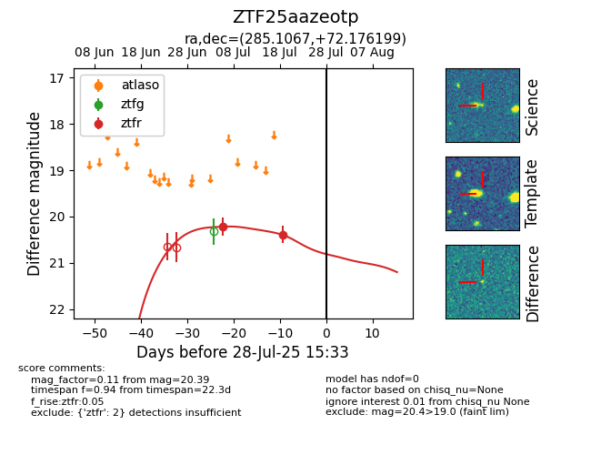

Target ZTF25aazeotp at 2025-07-28 15:33, see:
FINK: fink-portal.org/ZTF25aazeotp
Lasair: lasair-ztf.lsst.ac.uk/objects/ZTF25aazeotp
ALeRCE: alerce.online/object/ZTF25aazeotp
alt names
ZTF25aazeotp (ztf,fink)
coordinates:
equatorial (ra, dec) = (285.1067,+72.17620)
galactic (l, b) = (103.2004,+25.05044)
photometry
last ztfr=20.39
2 ztfr detections
